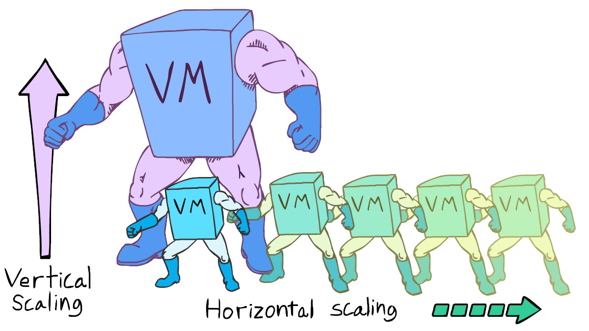

Updated ( 2020-07-26 )
MySite> MySQL (Databases / SQL)> Databases Explained
- NoSQL is faster and suited better for large data bases VS SQL is better for smaller databases and has strong legacy
- the Database is a collection of sturctured (or semi-structured) data
- the DBMS (Database Management System) is a system which accesses and manages the data stored in the database
- a database system or (database in short) = data + DBMS + application
- MySQL, MongoDB, etc... are basically database servers, they manage their own data
- we can connect to these DB servers and communicate with them through database query languages (SQL or NoSQL)
- ACID concenpt is a set of properties that the database transation intended to guarantee data validity despite errors, power failures, and other mishaps:
Atomicity - the transaction is fully happening or not happening at all
Consistency - data can be changed only in the allowed way
Isolation - one transaction are happening sequentially (no dirty reads)
Durability - ensures that the transaction is permanently happened even in system failure (written in non volatile memory)
- in Relational Databases the data is stored in tables, hence the name 'structured' (all rows in the table must have follow the same schema)
- every table can have one (optional) primary key or composite key which uniquely defines a row in the database
- every table can have (optional) composite keys which is a primary key from another table
- in Document-Oriented Databases the data is stored in documents, this model follows an object oriented structure (which is schemaless = data storage model can be structured freely)
- it's a "programing way" to store data, objects have key/value pairs, structured hierarchically and can be easly stretched when needed


- Database scaling is basically splitting the same dataset to multiple pieces
- Vertical Scaling = Upgrading a single sotrage device capacity (more CPU power, storage capacity, etc...)
- Horizontal Scaling = Adding additional storage devices to the same database system
- Horizontally scaling Relational Databases is somewhat problematic because the data is strictrly structured
- Horizontally scaling Object-Oriented Databases is easy because the data is schemaless
- database 'programming' languages do CRUD (Create Read Update Delete) operations in databases
- Relational Databases use SQL (Structured Query Language) which is a standard language to access relational databases (still SQL slightly changes depending which database implements it)
- Document-Oriented Databases use NoSQL (Not Only SQL), there's no standard NoSQL language to access document-oriented databases